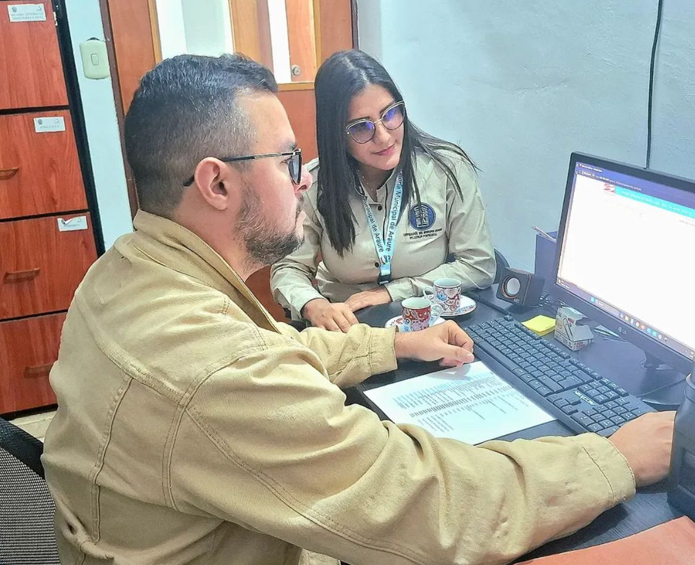

42 años de servicio, vigilando el patrimonio público de Acarigua
y sus parroquias · Estado Portuguesa
Antes de realizar su declaración disponga de toda la información patrimonial (activos y pasivos), incluyendo los bienes y obligaciones de su grupo familiar: cónyuge, concubino o persona con quien mantiene una unión estable de hecho y los hijos menores de edad sometidos a su patria potestad.
No olvide que para acceder al sistema su cuenta de usuario es el correo electrónico con el cual usted se registró; asimismo, recuerde cambiar la clave periódicamente.
No hay excepción alguna en la presentación de la declaración jurada de patrimonio; el trámite es de obligatorio cumplimiento para todas las personas señaladas en el ordenamiento jurídico vigente.
Debe ser presentada dentro de los treinta (30) días siguientes a la toma de posesión de funciones públicas y dentro de los treinta (30) días posteriores al cese en el cargo, de conformidad con lo establecido en el artículo 28 de la Ley Contra la Corrupción.
Todo funcionario o empleado público, de conformidad con lo establecido en el artículo 3 de la Ley de Reforma del Decreto con Rango, Valor y Fuerza de Ley Contra la Corrupción. Igualmente los miembros de unidad de gestión financiera de los consejos comunales, integrantes de directivas de organizaciones sindicales y gremiales, y los obreros al servicio del Estado.
A partir del 1 de octubre de 2021, todos los montos deben expresarse en bolívares (Bs), según el Decreto de Nueva Expresión Monetaria publicado en la Gaceta Oficial N° 42.185 del 06 de agosto de 2021.
No. La presentación de la declaración jurada de patrimonio es una obligación personalísima del funcionario, dado que la responsabilidad de lo declarado no es transferible.
El sistema permitirá imprimir el certificado electrónico, el cual sirve como constancia de haber cumplido con la obligación. Este documento no requiere de firma o sello.
La Contraloría del Municipio Páez consolidó su estructura formal hace aproximadamente 42 años, siguiendo el impulso de la reforma del régimen municipal de los años 80 , con el fin de garantizar la transparencia en una Acarigua en pleno crecimiento comercial y agrícola. Durante este periodo, la institución dejó de ser una simple dependencia administrativa para convertirse en un órgano con autonomía funcional y organizativa, cuyo hito histórico principal fue la transición de la vigilancia básica a la implementación de sistemas modernos de fiscalización externa, alineados hoy con las directrices de la Contraloría General de la República para supervisar el patrimonio público local y fomentar la participación ciudadana.
La Contraloría del Municipio Páez es el órgano encargado del control, vigilancia y fiscalización de los ingresos, gastos e integridad del patrimonio municipal. Ejerce sus funciones de manera autónoma, en el marco del Sistema Nacional de Control Fiscal, con apego a la Constitución de la República Bolivariana de Venezuela y demás leyes que rigen la materia.
"Nuestro compromiso es apalancar el desarrollo continuado y sostenible del municipio Páez del estado Portuguesa potenciando una función de gobierno óptima, transparente y de calidad en el uso de los recursos financieros y bienes del municipio, fomentando sinergias positivas creadoras de valor que propendan a la total observancia del marco jurídico positivo Venezolano."
"A cinco años ejerceremos la rectoría total de la función contralora en el municipio Páez del estado Portuguesa, siendo referentes a nivel estadal y nacional. Visualizamos en cinco años una estructura funcional y normativa eficaz, eficiente, efectiva, pertinente y oportuna, que interactúa exitosamente a lo interno de la Alcaldía y Cámara del municipio Páez del estado Portuguesa y a lo externo con los diferentes estamentos del poder comunal en la búsqueda de la prestación de un servicio contralor sostenible y de calidad."
Dirección: Avenida 33 con calle 35, Edificio Doña Cecilia, Casco Central. Acarigua, Portuguesa.
Horario: Lunes a Viernes: 8:00 a.m. a 3:00 p.m.
La Dirección de Atención al Ciudadano promueve la participación a través de programas pedagógicos y actitudes formativas dirigidas a la ciudadanía, atendiendo y tramitando denuncias, quejas y peticiones.
Reporte irregularidades en el manejo de fondos públicos municipales. Su denuncia es confidencial y contribuye a la transparencia de la gestión pública.
Ver másPrograma educativo que promueve los valores de transparencia, legalidad y ética pública en instituciones educativas del Municipio Páez.
Ver másAcompañamiento a las unidades de gestión financiera de los consejos comunales en el correcto cumplimiento de sus obligaciones de control fiscal.
Ver másEn un acto protocolar celebrado en la sede de la Contraloría General de la República, el Abg. Leonel Lucena fue juramentado oficialmente como el nuevo Contralor del municipio Páez, estado Portuguesa. La ceremonia, fue presidida por el Contralor General de la República, Dr. Gustavo Vizcaíno Gil. Durante el evento, las autoridades nacionales destacaron que esta designación forma parte del plan de fortalecimiento del Sistema Nacional de Control Fiscal en todo el territorio venezolano.
El pasado 13 de abril de 2026, la Contraloría del estado Portuguesa, en conjunto con las contralorías municipales (incluyendo la de Páez), consignó formalmente su Informe de Gestión correspondiente al año 2025 ante la Contraloría General de la República. Este paso es fundamental para certificar la legalidad de los ingresos y gastos ejecutados en la jurisdicción durante el año anterior.
Recuerde que el incumplimiento de esta obligación acarrea sanciones administrativas y posible inhabilitación para el ejercicio de la función pública.
Actividades, eventos y comunicados oficiales de la Contraloría del Municipio Páez
